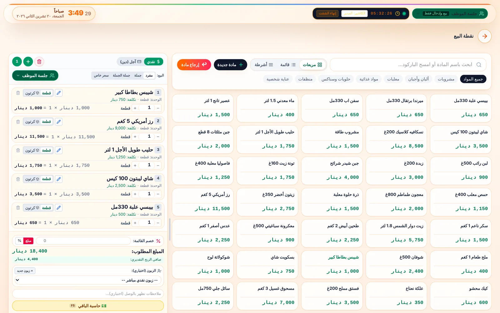
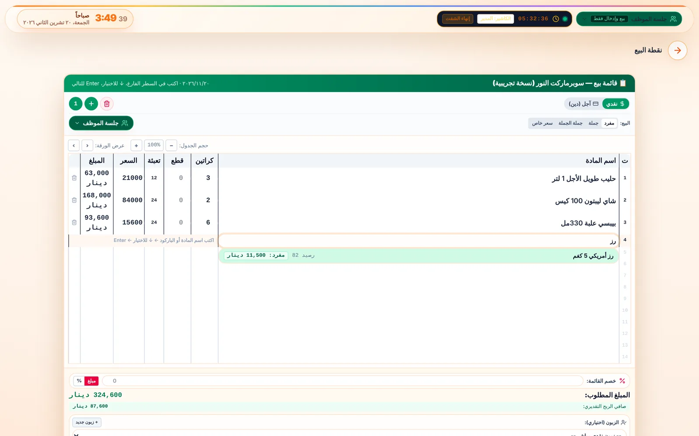

نقطة بيع سريعة بثلاثة أوضاع
اختر الطريقة التي تناسب عملك وعمّالك — وبدّل بينها بضغطة من الإعدادات.

الوضع العادي (مربعات)
شبكة مواد بأسعارها مع تصنيفات، اضغط المادة لتضاف للقائمة فوراً.

الوضع الكلاسيكي
قائمة البيع كجدول ورقي: كراتين وقطع وتعبئة وسعر لكل مادة، قابل للتعديل والتكبير.

وضع القائمة (ورقة)
اكتب اسم المادة في السطر فتظهر المطابقات وسعرها بجانبها، Enter للاختيار والانتقال للعمود التالي.
البيع السريع
زرّان فقط: نقد وآجل
وضع «الزرّين» يختصر البيع: Enter للنقد وCtrl+Enter للحفظ والطباعة — والاختصارات قابلة للتعديل والعكس حسب رغبتك.
- شريط صغير لاختيار اسم الزبون عند البيع الآجل
- أسعار مفرد / جملة / جملة الجملة / سعر خاص
- خصم على القائمة بمبلغ أو نسبة، وحاسبة الباقي (F5)
- تحكم بحجم الجدول وعرض الورقة